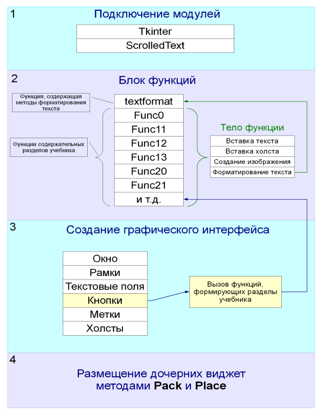

Статья по проекту "Электронный учебник по языку программирования Python" в сборник докладов
Язык программирования Python в настоящее время активно развивается и набирает популярность. Это универсальный язык высокого уровня, поддерживающий большинство стилей программирования (структурное, объектно-ориентированное, функциональное программирование и др.). Интерпретатор языка распространяется свободно на основании лицензии подобной GNU General Public Licence, под которой распространяется большинство свободного программного обеспечения. Кроме того, язык имеет ясный синтаксис. Так, в других языках для указания программного блока (например, цикла или функции) используется больше специальных символов и ключевых слов; в результате код получается более громоздким. В Питоне же важны отступы: они то и выполняют роль "указателей" определенного программного блока. В результате программный код, написанный на языке Питон, получается более компактным и легко читаемым, что может иметь важное значение для начинающих программистов.
Официальный сайт Питона – http://python.org/. Есть несколько русскоязычных ресурсов по Python`у: самый большой из них http://python.ru/. Помимо прочего, там собрана вся русскоязычная документация. Однако ее не так уж и много, и в основном она ориентированна на профессиональных программистов.
Поскольку Python легок для освоения, и при программировании на нем получаются ясные синтаксические конструкции, то, на наш взгляд, он прекрасно подходит для изучения основ программирования. Для распространения Python в качестве первого языка программирования нами был создан электронный учебник по данному языку (рис. 1).

Рис. 1. Интерфейс электронного учебника
В первых разделах учебника рассматриваются основные понятия, характерные для большинства языков программирования. Например, таких как, типы данных, условия, циклы, функции. Далее рассматриваются модули, последовательности и словари. Во втором варианте учебника был создан раздел, посвященный основным парадигмам программирования (структурному, функциональному и объектно-ориентированному). Кроме того, учебник содержит примеры практической значимости Питона.
Принципиальным моментом было создание электронного учебника с помощью средств самого языка. В программном коде учебника условно можно выделить четыре части: подключение модулей, блок функций, программирование виджет (графического интерфейса) и их размещение (рис. 2).

Рис. 2. Схема структуры программного кода электронного учебника
Графический интерфейс был создан с помощью библиотеки Tkinter, которая входит в стандартную поставку интерпретатора Питона. В учебнике есть меню из кнопок, текстовые поля с полосами прокрутки для текста и примеров программ, а также так называемый холст для рисунков. Холст – это экземпляр объекта canvas. Изображения на нем (например, линии, прямоугольники) были получены с помощью соответствующих методов. На данный момент существует два варианта учебника. В первом случае графика и примеры программ располагаются во внешних виджетах по отношению к основному текстовому полю; в другом – внутри: Tkinter содержит методы, позволяющие одни текстовые поля и холсты вставлять в другие.
Конструирование графического интерфейса с помощью Tkinter относится к невизуальному проектированию, поэтому использовались так называемые менеджеры расположения. В Tkinter их три: pack (простой упаковщик), place (произвольное расположение) и grid (сетка). В учебнике были использованы методы pack и place.
Учебник работает как в операционных системах семейства Windows, так и Linux при наличии установленного интерпретатора и библиотеки Tkinter. Однако существует небольшая проблема связанная со шрифтами, т.к. каждая система имеет свой набор шрифтов по умолчанию. Данная проблема решается простой заменой названий шрифтов в коде. Для удобства, во второй версии учебника была создана отдельная функция, содержащая методы для форматирования текста.
Созданный нами электронный учебник по языку программирования Python может способствовать распространению данного языка, по крайней мере, среди русскоговорящего населения. В дальнейшем планируется его улучшить и выложить в Интернет.
Литература
- Россум, Г. и др. Язык программирования Python. / 2001 – 454 с.
- Сузи Р. А. Язык программирования Python. Бином, 2006 - 328 с.
- Чаплыгин А. Н. Учимся программировать вместе с Питоном. Revision: 226
Интернет-ресурсы
- http://python.org/
- http://www.pythonware.com/
- http://python.ru/